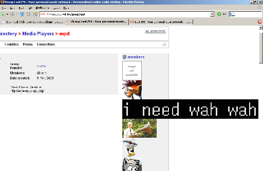
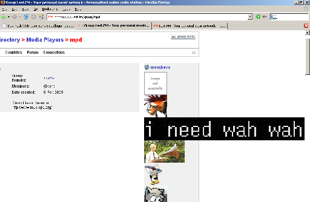

LastFm
Last.FM rules, but there's a bug with avatar resizing (can you spot it?)
Doesn't look like the last.fm/AS guys noticed...

I really do ''need'' wah wah.
Last.FM rules, but there's a bug with avatar resizing (can you spot it?)
Doesn't look like the last.fm/AS guys noticed...

I really do ''need'' wah wah.